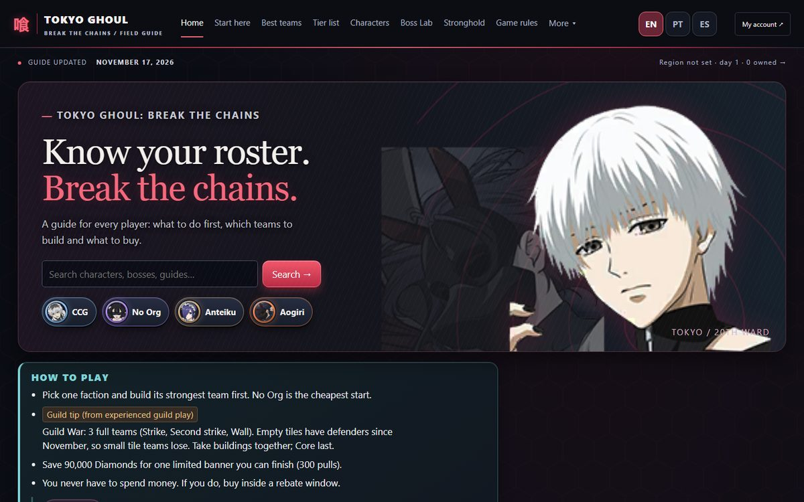
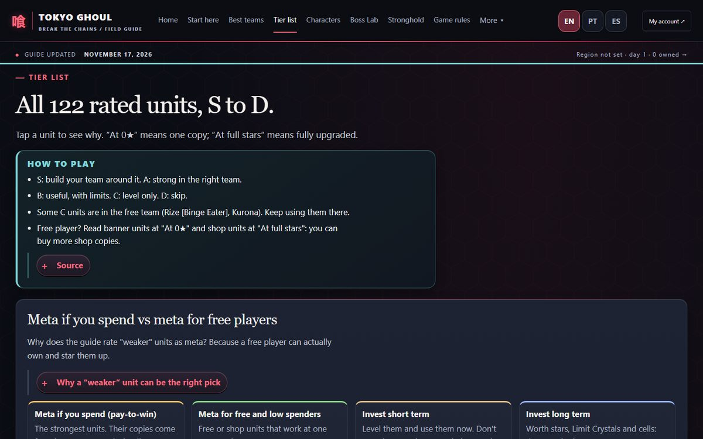
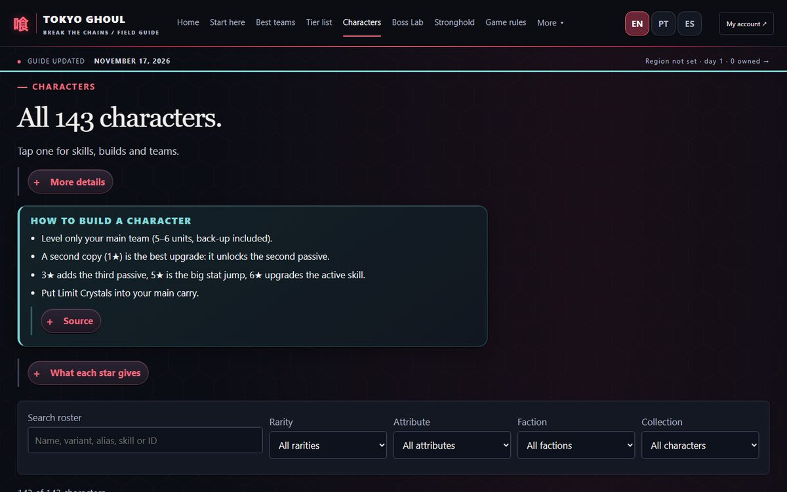
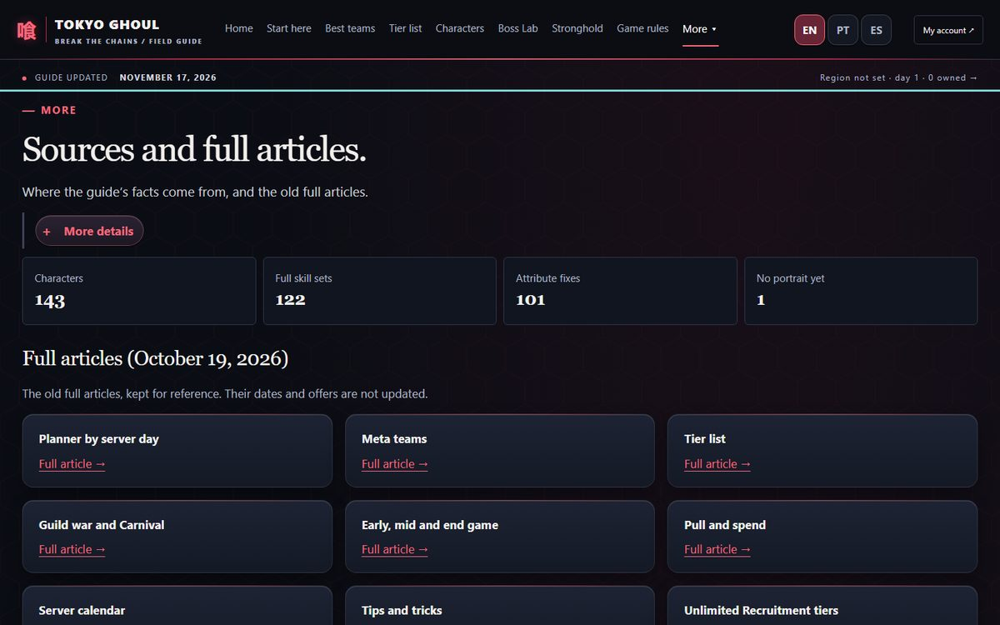
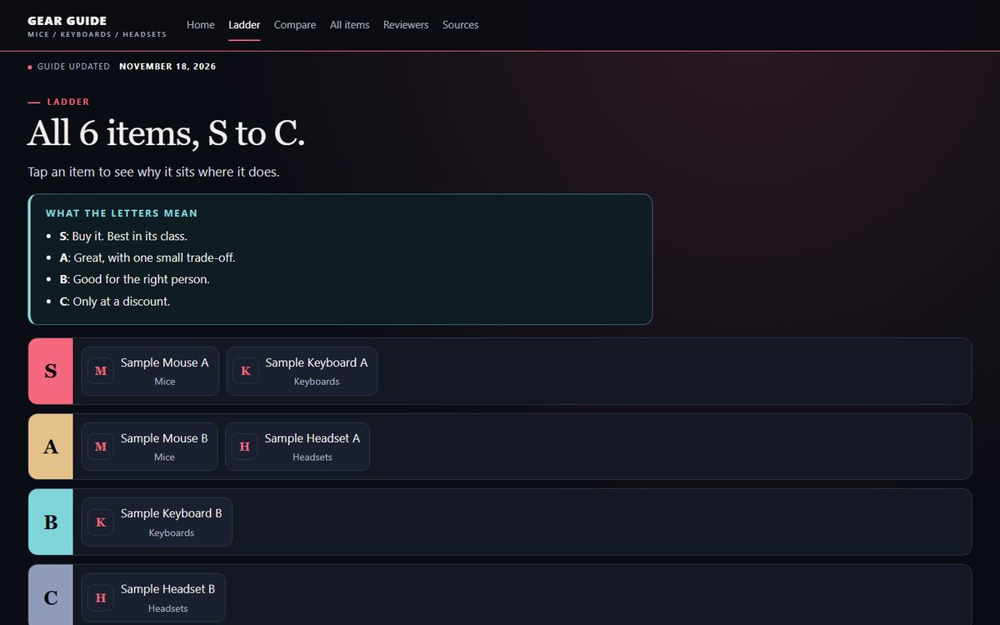
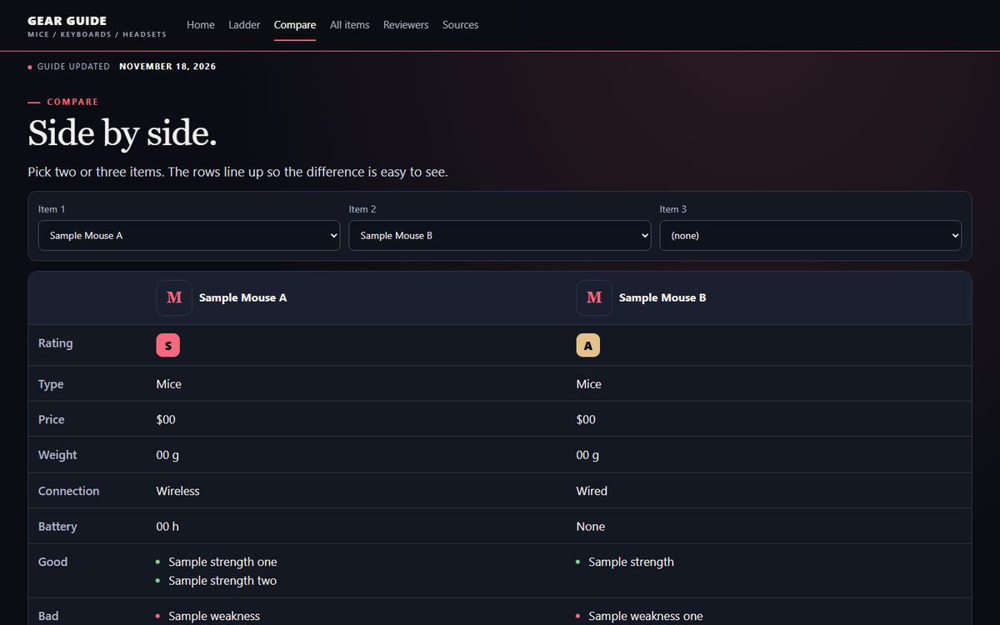

What I use
Everything here is a normal product anyone can sign up for. Nothing is custom except the data I collected.
Claude Code
Anthropic's agent app (desktop app or terminal). It is not a chat box: it works inside a folder on my PC, creates the files, runs them, looks at the result and fixes it. It comes with the paid Claude plans.
Claude Opus, and Fable for hard parts
Opus does most of the building. For the hard problems I switch to Fable, Anthropic's top model right now (Nov 2026). Use the strongest model you have for the plan and the review; cheaper ones are fine for small edits.
I talk, I don't type
Voice typing (on Windows press Win + H). I explain what I want like I would to a person, with the reason. That is why I have no neat list of prompts. The prompts below are the cleaned-up version of what I say.
Claude in Chrome
A browser extension that lets Claude read pages in my own Chrome. I use it for things a normal AI can't open: YouTube transcripts, sites that block bots, pages I'm signed in to.
GitHub Pages
Free. The site is just files in a GitHub repository, and GitHub gives it a public link. No server, no monthly cost, opens on any phone.
A second AI as the judge
Before anything goes live, a fresh AI that did not build it (a new Claude chat, or ChatGPT) reviews it and gives a score. The builder never grades its own work.
How it works
The order matters. Most people ask the AI for "a website" first. I ask for the data first.
Collect
Pull the facts into data files. Every row keeps where it came from and the date.
Build
A small script turns the data into the pages. Nobody types facts into the pages by hand.
Look
The AI opens the site, takes screenshots on PC and phone width, and fixes what looks wrong.
Judge
A second AI checks every claim against the data and scores it. Fix, then judge again.
Publish
Push to GitHub. The link updates. Post the link in Discord.
Update
When something changes, change the data and rebuild. The pages follow.
The look
This is what my Tokyo Ghoul guide looks like, and the rules behind it. These rules are what you give your AI.




| Part | What I told the AI |
|---|---|
| Colours | Dark background (#0b0d14), slightly lighter panels (#141823), off-white text, ONE accent colour (mine is red #f5687d), a second calm colour for help boxes (cyan #80d5d8), gold for warnings. |
| Fonts | Serif for big titles (Georgia), plain sans for everything else. Body text 17px or bigger. |
| Layout | Use the full screen width on PC. Cards in a grid, rounded corners, thin borders. Must work at phone width with no sideways scrolling. |
| Words | Short. Answer first. No paragraph longer than 3 lines. Details go behind a button. |
| Pictures | A picture on every item. People scan pictures, they don't read lists. |
| Trust | "Updated" date at the top, a Source button on every claim, and a label on anything that is opinion or unverified. |
Step by step
Do these in order. Each step has a prompt you can copy. Change the parts in CAPITALS.
Set up (once, about 20 minutes)
- Get a paid Claude plan and install Claude Code (the desktop app is the easy one).
- Make a free GitHub account.
- Make an empty folder on your PC for the guide and open that folder in Claude Code.
- Optional: install the Claude in Chrome extension for research.
- No Claude Code? The same prompts work in a normal Claude or ChatGPT chat. You will just copy files around by hand.
Prompt 1 · the briefI want to build a guide website about TOPIC for AUDIENCE. The reader's main questions are: 1. QUESTION ONE (example: which one should I buy?) 2. QUESTION TWO 3. QUESTION THREE Before you build anything, ask me up to 5 questions you need answered, then write a one-page plan: the pages, what data each page needs, and where that data will come from. Wait for my OK before building. Rules for the whole project: - Facts come from data files, never from your memory. - Every fact keeps its source link and the date it was checked. - If you cannot verify something, label it "unverified". Never guess. - Write for people who are not experts. Short sentences.
Collect the data first
- Tell it exactly which sources to use. Good sources: official spec pages, a database site, reviewers who measure things, your own tests.
- Videos count. Ask it to read the transcript and keep the video link and the time stamp.
- Ask for a count at the end and a list of what it could not find.
- Open the data file and spot-check 5 rows yourself against the source. If 1 of 5 is wrong, stop and fix the method.
Prompt 2 · dataDo not build any pages yet. Build the data file first. Create data/items.json. One entry per ITEM with: id, name, category, the specs I care about (LIST THEM), price, a one-sentence verdict, pros, cons, and a "sources" list. Each source has: label, url, date checked. Use these sources: SOURCE 1, SOURCE 2, SOURCE 3. Save the raw pages you read in data/raw/ so we can re-check later. Rules: - A spec needs at least one source. A rating or opinion needs at least two sources that agree, or it is labelled "opinion: NAME". - Leave a field empty and add it to data/missing.md if you cannot find it. Do not fill gaps from memory. When done, tell me: how many items, how many have no source, and what is in missing.md.
Build the site from the data
- Give it the look. Either paste the prompt on the right, or give it my starter template (below) and say "use this layout".
- Ask for one small build script, so updating later is one command.
- If you have a site you like, give it a screenshot and say "this feeling".
Prompt 3 · build + lookNow build the site from data/items.json. Write a build script (build.py) that reads the data and writes the site into a "site" folder. No facts typed into the pages by hand. Pages: Home, Ladder (tier list), Compare (2-3 items side by side), All items (search + filters), Reviewers, Sources. Look: - Dark theme: background #0b0d14, panels #141823, off-white text, one accent colour ACCENT, thin borders, rounded cards. - Serif font for big titles, sans for the rest, body text 17px. - Menu across the top. "Guide updated DATE" always visible. - Every page starts with: small label, big title, one line of help, then a box with the answer in 3-4 bullets. - Details and sources sit behind a "+ Source" button so pages stay short. - A picture on every item card. Tap a card to open the full details. - Full screen width on PC. Must work on a phone with no sideways scrolling. - Plain HTML, CSS and JavaScript. No frameworks, no outside files, so it can be hosted anywhere. When it is built, open it yourself, take screenshots at PC width and phone width, look at them, and fix anything broken before you show me.
Look at it and say what is wrong
- This is most of the work, and it is just talking. Open the site, and say what bothers you in plain words.
- Say the problem and the reason. The AI picks a better fix when it knows why.
- One round of 3 to 5 complaints at a time. Then look again.
Prompt 4 · things I actually say- "Too wordy. Cut every page to what someone needs in 10 seconds. Move the rest behind a button." - "Everything is squeezed to the left. Use the whole screen." - "This chart is hard to read. Break it into small blocks with one number each." - "I want pictures, not a wall of text." - "Someone who has never seen this topic should understand this page. Rewrite the labels in plain words." - "Where did this number come from? Show me the source. If there isn't one, remove it." - "Open every page and look at it. Not a sample, every page."
Get it judged by a different AI
- Open a brand new chat (or a different AI). Give it the data file and the pages. Don't tell it you're happy with them.
- Fix what it finds, then judge again with another fresh chat. I don't publish until it scores 95 or more with nothing serious left.
- For my game guide the bar is 99, because bad advice there costs people real money.
Prompt 5 · the judgeYou are a strict reviewer. You did not build this and you get no credit for being nice. Here is a guide site and the data file it was built from. 1. List every claim on the pages that is not backed by the data file or has no source. 2. List anything a beginner would not understand. 3. List anything that looks broken or crowded, on PC and on phone width. 4. List places where an opinion is shown as a fact. Mark each finding HIGH, MEDIUM or LOW. Then give one score from 0 to 100. Do not round up. If you could not check something, say so instead of assuming it is fine.
Publish to a free link
- In Claude Code, the prompt on the right does it. It will ask you to sign in to GitHub once.
- By hand: on github.com press New repository, make it Public, press Add file → Upload files, drop in the files from your "site" folder, then Settings → Pages → Deploy from a branch → main → Save.
- After a minute or two your link is YOURNAME.github.io/REPONAME/.
Prompt 6 · publishPublish the "site" folder with GitHub Pages in a new public repository called REPONAME. Before you push, check that nothing private is in the files (names, emails, file paths from my PC). After it is live, open the public link yourself and confirm the new pages load, then give me the link.
Keep it up to date
- A guide people stop trusting is worse than no guide. Put the date on it and keep it true.
- When something changes, I say what changed and where I saw it. The AI updates the data, rebuilds, and publishes.
- When someone says "that's wrong", don't just agree or disagree. Have the AI re-check the source first.
Prompt 7 · updateUpdate the guide. What changed: WHAT CHANGED. Where I saw it: LINK OR SCREENSHOT. Check it against a second source before changing anything. Update the data file (not the pages), rebuild, tell me which pages changed, set today's date as the "updated" date, and publish. If the new information disagrees with what the guide says now, show me both and the sources before you pick one.
Starter template
A working copy of my layout with sample data: Home, Ladder, Compare, All items, Reviewers and Sources. It is one file. Free to copy, change and publish, no credit needed.


Open the starterDownload the file
How to use it
- Download the file and put it in your guide folder (or attach it to a chat).
- Paste the prompt. The AI keeps the layout and swaps in your data.
- To change the colour, tell it "make the accent blue", or edit --accent near the top of the file.
- Everything in it is fake sample data ("Sample Mouse A", "$00"). The page shows a warning until all of it is replaced.
Prompt 8 · use the starterAttached is guide-starter.html. Keep its layout, pages and code. Replace the sample DATA block with real data about TOPIC from data/items.json. Change the title, headline, categories, tier meanings and spec rows to fit. Every item needs at least one source link and the date it was checked. Do not leave any sample item in. Then open it, screenshot every page at PC and phone width, and fix what looks wrong.
For a gear guide (peripherals, comparisons, reviewers, ladders)
How I would set up the pages and the data for that topic.
Ladder
One ladder per type (mice, keyboards, headsets). At the top, say what S, A, B and C mean in one line each, and who made the rating.
Compare
Two or three items side by side with the same rows: price, weight, connection, battery, good, bad, verdict.
Item cards
Picture, rating, price, one sentence on who should buy it, specs, good and bad, sources. Search plus filters for type, price range and rating.
Reviewers
Who you trust and why: do they measure, do they take sponsors, what are they good at. Link to them. Rate how much weight each one gets.
Specs vs opinions
Keep them apart. Specs come from the maker's page or a measurement. Ratings are opinions: show whose opinion, and need two reviewers who agree.
Prices go stale
Store the price with the date and the shop. Show "price checked DATE" on the card. Re-check before each update.
Mistakes I made, so you can skip them
All of these happened to me on the Tokyo Ghoul guide.
Trusting one source
I published a ranking based on one person's tip and old videos. It was out of date. Now a ranking needs two recent sources or it gets a "no recent source" label.
Letting the AI agree with me
AI tends to say yes. Tell it: "Be a strict expert. If my idea is wrong based on the data, say so and show the data."
Too many words, too many pages
My first version had 19 menu items. Nobody read it. It is 8 now, with the rest under "More".
Not looking at every page
The AI said "done" and three pages were broken. Always make it screenshot every page, PC and phone, and look yourself.
Sending files instead of a link
People don't open zips or PDFs. One link that opens in the browser, on a phone, with no sign-in.
Publishing private stuff
A public GitHub repository is public. Before each publish, have the AI scan for names, emails and PC file paths.
What you can't copy from me
So you know what to expect.
It took weeks
My guide runs on a database pulled from the game files (143 characters), 350+ creator video transcripts, and my own in-game tests and screenshots. The site runs about 100 automatic checks before each publish. That part is specific to the game. Your topic needs its own data, and that is where your time goes.
The translator bot
The Discord bot is a separate project that runs on my own machine. It is not part of the guide and can't be handed over as a file.
What it costs
GitHub is free. The AI is a monthly subscription. A small guide fits on the lowest paid plan. I'm on a bigger plan only because I run it all day.
What to expect
A first version with the starter template: an evening. A guide people rely on: keep updating it every week. The AI does the typing; you still have to check it.